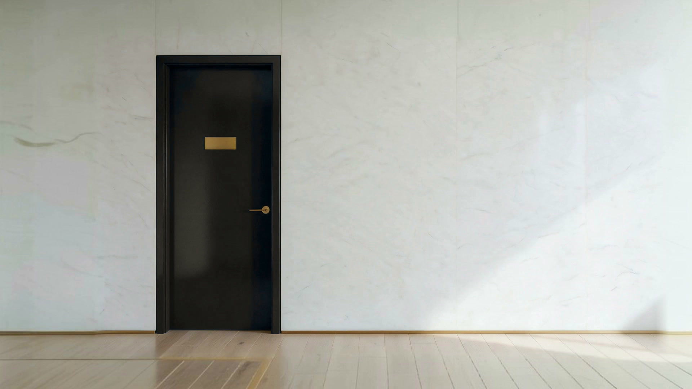
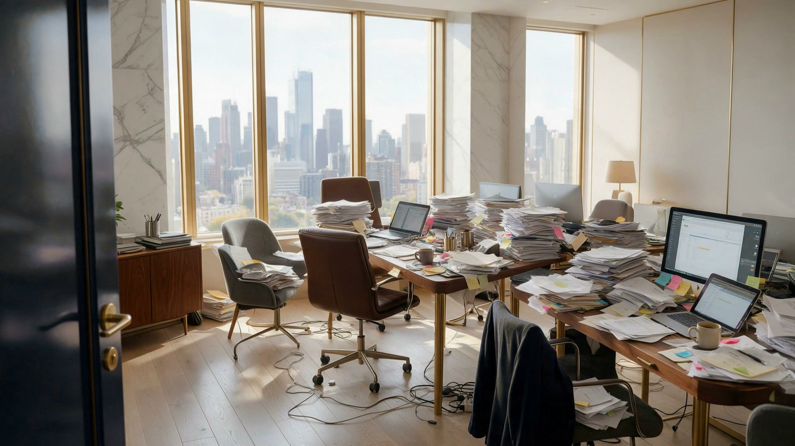
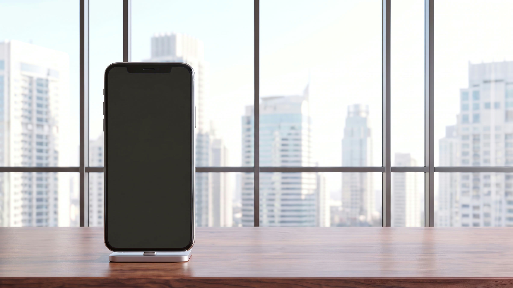
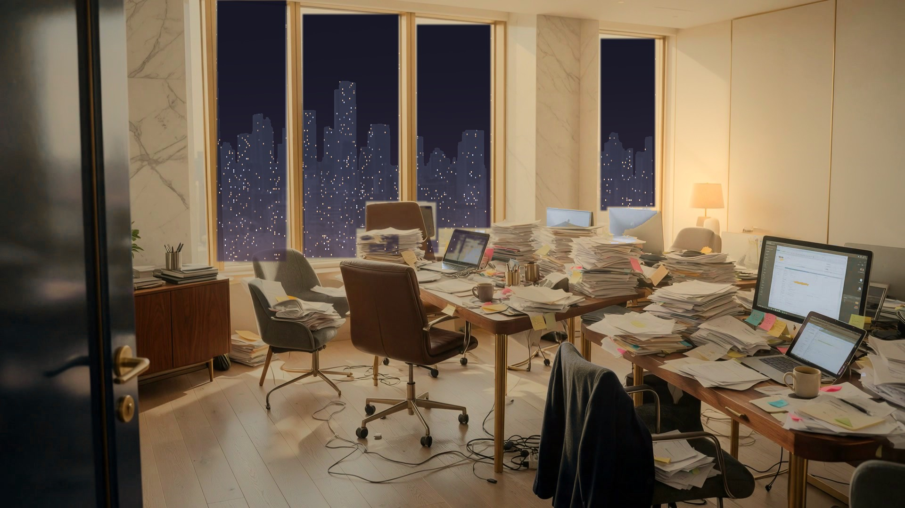
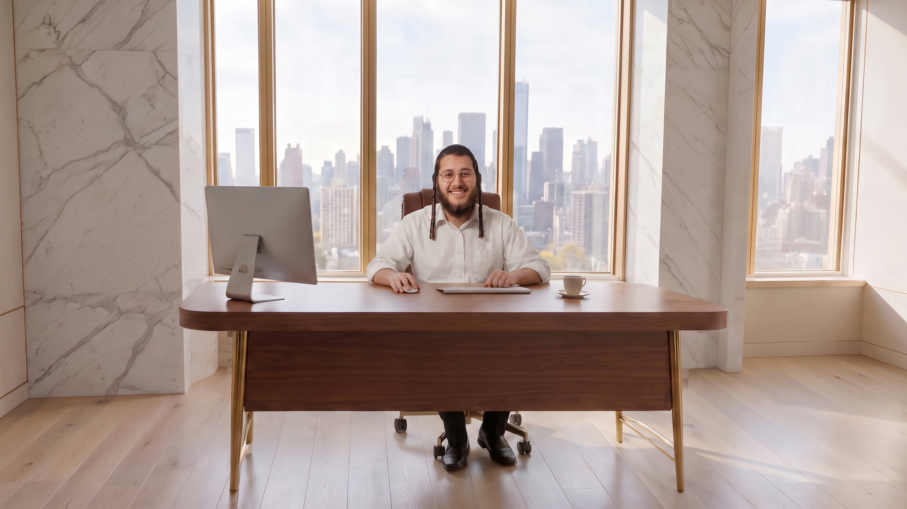

משרד
איך העסק שלך עובד היום?
תיכנס, נראה.
הזמנה במחברת,
מקדמה באקסל,
והשאר בראש.
ואתה עונה להודעות
עד חצות.
בוא, אני אעשה לכם סדר.
נעים מאוד, אני אפרים.
אשתי פתחה בר קינוחים, וההזמנות התבלבלו. בניתי לה אתר ומערכת כגוף אחד, והיום פטיסייר עובד עליהם.
בוא, תראה איך זה נראה.
אתר ומערכת לכל עסק
עסקים שסידרתי
קריספרי
ברי פירות לאירועים מה הקפצנואתר מכירה עם עולם תוכן, ופאנל ניהול שבו מעדכנים לבד מחירים, מוצרים וטקסטים, בלי לחכות למתכנת.
רוצה כזה לעסק שלך? ←
אחרי שהמערכת עולה
השאלה חוזרת.
השאלה חוזרת.
התשובה כבר מוכנה.
לקוח שואל כמה זה עולה, ומקבל מיד תשובה עם קישור להזמנה. ההזמנה נוחתת ישר במערכת.
שיחה לדוגמה
הסרטונים שלי
דקה אחת.
דקה אחת.
ורואים איך זה עובד.
סרטונים קצרים על סדר בעסק, ועל מה שקורה כשהמערכת עובדת במקומך.
קצת עליי
נעים מאוד,
נעים מאוד,
אני אפרים.ואני עוזר לבעלי עסקים להפסיק לחזור על עצמם.
אני בונה אתר ומערכת ניהול שמחוברים לגוף אחד. יושב איתכם על העסק, מבין מה חוזר על עצמו ואיפה העבודה נתקעת, ובונה את מה שעושה את זה במקומכם.
- 1מאפייןמה חוזר על עצמו, ואיפה העבודה נתקעת.
- 2בונהמערכת אחת סביב איך שהעסק באמת עובד.
- 3מטמיעומלווה, עד שהמערכת באמת מקצרת לכם את היום.